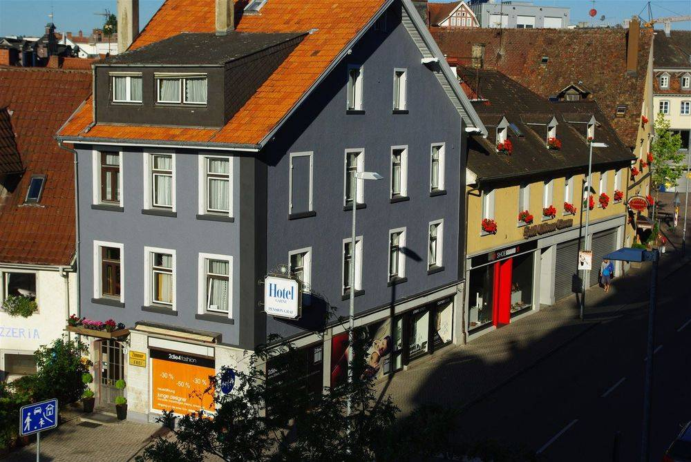
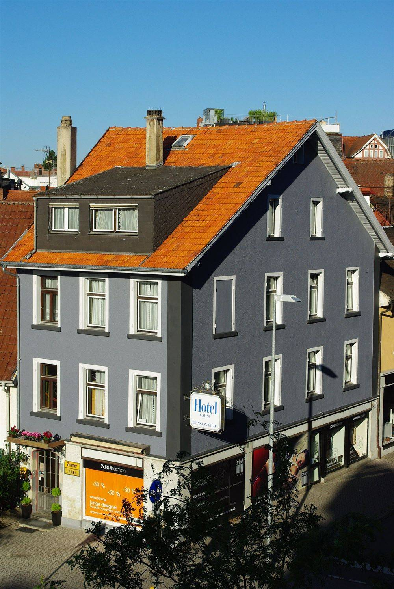
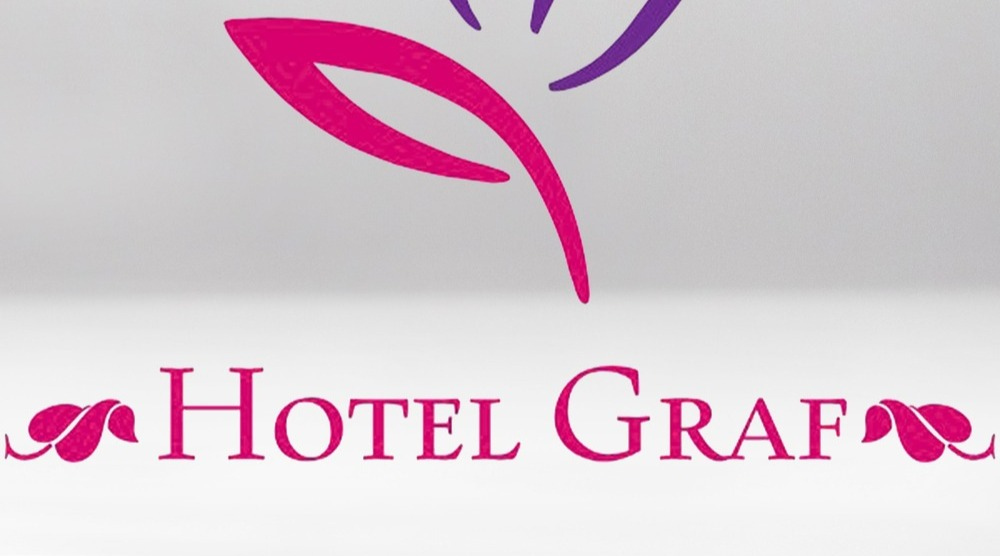
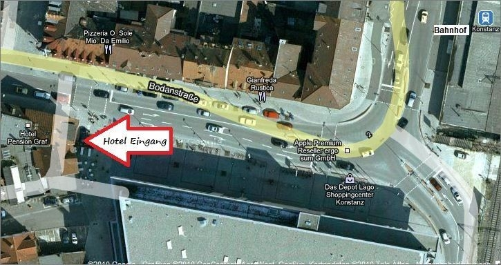
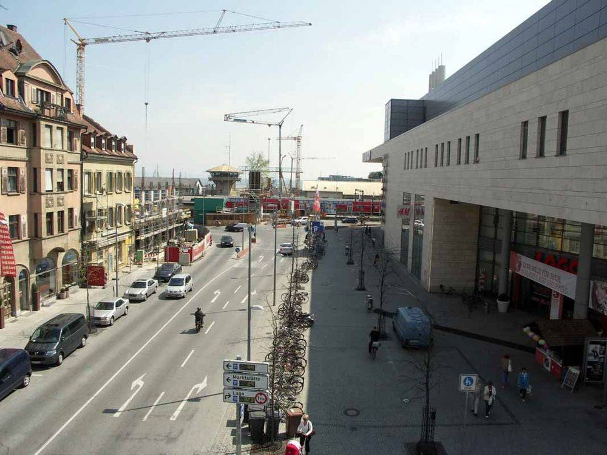
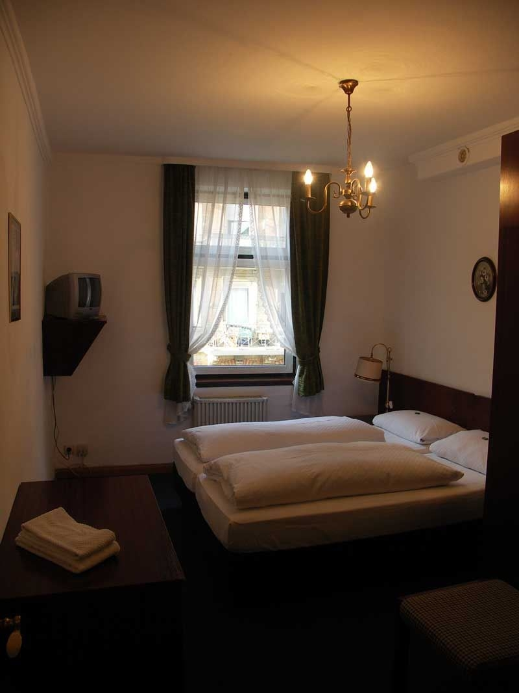
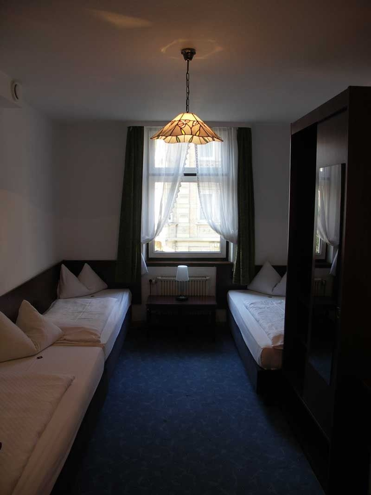
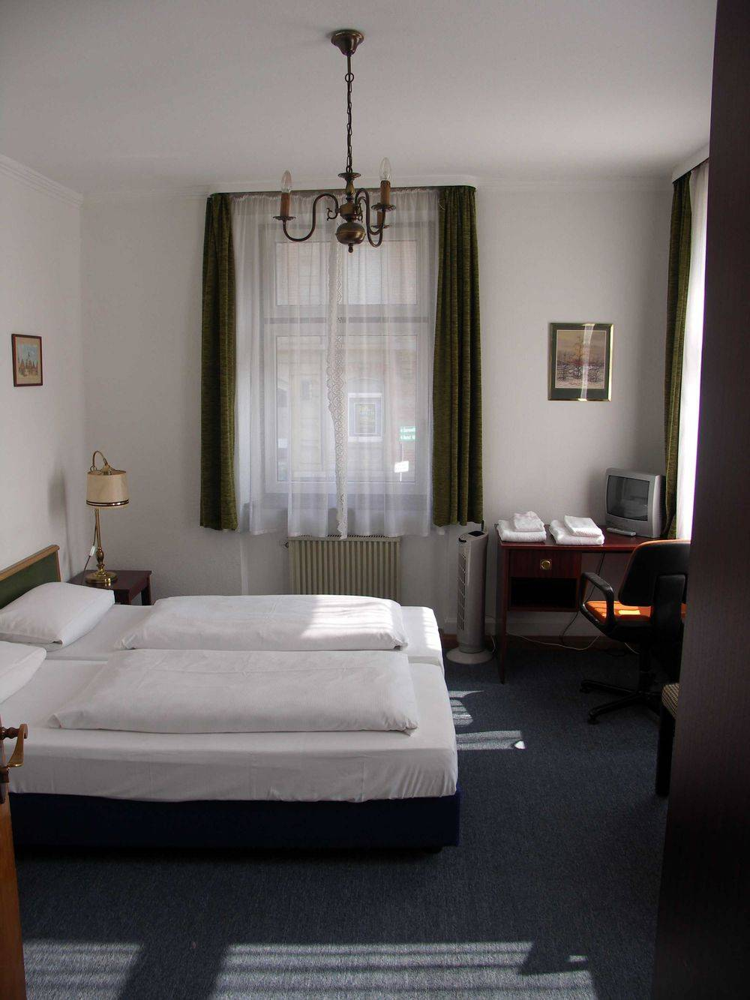
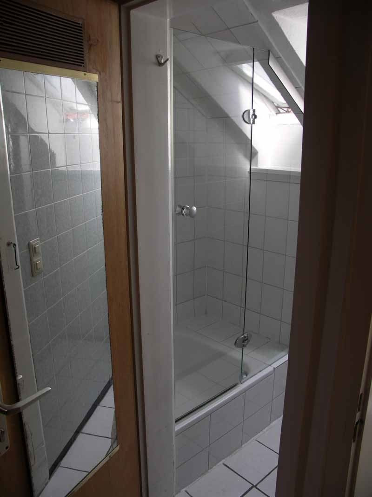

01 · Wenige Schritte
See & Hafen.
Schiffsanleger, SEA LIFE und Uferpromenade erreichen Sie bequem zu Fuß.
Hotel Pension Graf · Konstanz
Eine persönliche Arbeitsprobe von Hotelfreunde. Bitte geben Sie das Passwort ein.
Das Passwort ist nicht korrekt.
Familie Günther · Wiesenstraße 2
Eine persönliche Nichtraucher-Pension gegenüber dem LAGO – nur wenige Schritte von Bahnhof, Schweizer Grenze, SEA LIFE und Schiffsanlegern entfernt.
Die Pension entdecken ↓
Gegenüber LAGO · nahe Schweizer Grenze
Willkommen bei Familie Günther
Die Pension Graf ist der ideale Ausgangspunkt für Stadterkundungen und Tagesausflüge rund um den Bodensee. Von hier starten Sie zu Fuß zum Hafen, per Schiff zur Mainau oder über die nahe Grenze in die Schweiz – und kehren abends in Ihr Zimmer zurück.

Zentral

„Der ideale Dreh- und Angelpunkt für Konstanz und den Bodensee.“
Konstanz vor der Tür
Vom Bodanplatz aus liegen Altstadt, Hafen und Grenze in Gehweite. Für Tagesausflüge öffnen sich Bodensee, Mainau, Schaffhausen und Bregenz.
Schiffsanleger, SEA LIFE und Uferpromenade erreichen Sie bequem zu Fuß.

Shopping, Kino und Gastronomie beginnen gleich auf der anderen Straßenseite.
Zu Fuß über die Grenze oder per Schiff zur Mainau und zu weiteren Zielen am See.
Zimmer für 1 bis 6
Vom kompakten Einzelzimmer bis zur klimatisierten Familien-Suite bietet die Pension unterschiedliche Kategorien – teils mit eigenem Bad, teils mit Dusche und WC auf der Etage.





Gut zu wissen
Die Pension ist bewusst unkompliziert organisiert. Damit Ihre Anreise entspannt bleibt, finden Sie die wichtigsten Hinweise schon vor der Anfrage.
Persönlich erreichbar
„Danke für Ihr Interesse – und kommen Sie uns bald wieder hier am Bodensee besuchen.“Familie Günther · Pension Graf
Wählen Sie Zeitraum, Gästezahl und Wunschkategorie. Anschließend geht es zum offiziellen Anfrageformular der Pension.